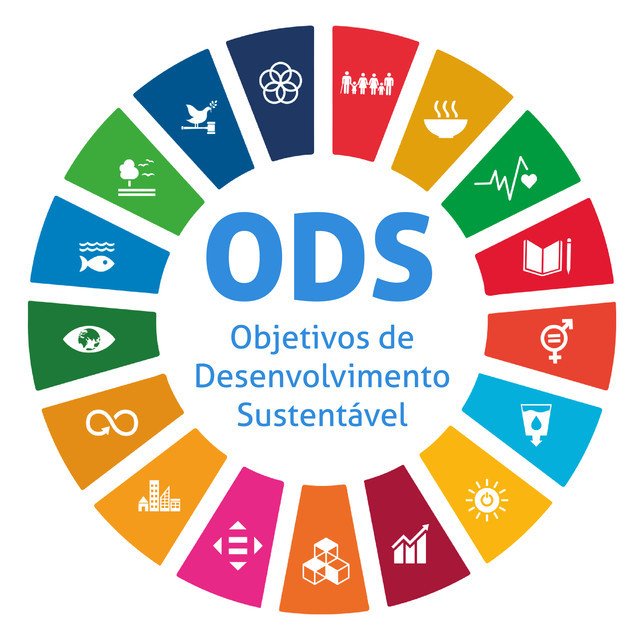

A Internet das Coisas (IoT) tem desempenhado um papel fundamental na
transformação da agricultura. Em 2024, a integração de dispositivos
conectados, como sensores e drones, está possibilitando a
monitorização em tempo real de condições do solo, clima e cultivos.
Essa tecnologia facilita práticas de agricultura de precisão,
otimizando o uso de recursos e melhorando a produtividade das
lavouras.
As vantagens incluem: 1. Monitoramento remoto: Sensores e dispositivos
IoT permitem que os agricultores monitorem suas plantações de qualquer
lugar, fornecendo dados cruciais para decisões rápidas e informadas.
2. Eficiência no uso de recursos: IoT ajuda a otimizar o consumo de
água, fertilizantes e outros insumos, reduzindo desperdícios e
aumentando a sustentabilidade das operações agrícolas.

O uso de Inteligência Artificial (IA) no setor agrícola tem se mostrado eficaz na personalização de soluções, redução do uso de pesticidas e aumento da produtividade. Estudos indicam que a IA pode contribuir para incrementos de até 10 sacas por hectare, promovendo uma agricultura mais sustentável e rentável.

A Pink Farms é a primeira fazenda vertical urbana da América Latina e atualmente a maior, com sede em São Paulo. Fundada em 2018, a empresa nasceu com o objetivo de transformar a forma como os alimentos são produzidos, promovendo uma agricultura mais sustentável, eficiente e próxima do consumidor. Seu nome reflete a iluminação rosa emitida pelas lâmpadas LED, que combinam espectros de luz vermelha e azul, ideais para o crescimento das plantas.

A partir de 2024, avanços significativos em machine learning (ML) estão moldando o campo e suas aplicações: 1. Automated Machine Learning (AutoML): AutoML ganhou força ao automatizar o design e a otimização de modelos de ML. Isso permite que organizações com conhecimento técnico limitado aproveitem o machine learning de forma eficaz, ao mesmo tempo em que aumentam a produtividade para cientistas de dados

Conheça os 7 componentes essenciais que tornam uma fazenda vertical inteligente com o uso de redes neurais.
Os sensores são responsáveis por capturar dados do ambiente como temperatura, umidade, luminosidade, pH da água, CO₂ e nutrientes. Essas informações são a base para decisões inteligentes e automáticas. Quanto mais dados, melhor a IA aprende.

Atuadores são os "músculos" do sistema. Com base nas análises da rede neural, eles ajustam luzes, irrigação, ventiladores, dosadores de nutrientes e mais, mantendo as plantas sempre nas condições ideais.

A inteligência artificial aprende com os dados coletados. Com o tempo, ela prevê padrões, detecta problemas precocemente e sugere melhorias para aumentar a produtividade e reduzir desperdícios.

É o cérebro que conecta sensores, atuadores e IA. Ele processa os dados em tempo real e executa comandos automaticamente, garantindo que tudo funcione em sintonia e com alta eficiência.
Armazena todo o histórico de cultivo e funcionamento do sistema. Esses dados alimentam os algoritmos de IA e permitem ajustes futuros baseados em resultados concretos.

Um ambiente inteligente exige que tudo esteja conectado com segurança. Protocolos como MQTT, HTTPS e criptografia garantem que os dados fluam entre os dispositivos sem riscos de invasões.
O sistema aprende continuamente. Se algo não funcionar bem, a rede neural adapta suas decisões para melhorar os próximos ciclos de plantio — sempre buscando o máximo desempenho.

A Ceres, por meio de suas iniciativas abordará quatro Objetivos de Desenvolvimento Sustentável (ODS) sendo ODS 2 - Fome Zero e Agricultura Sustentável. ODS 9 - Indústria, Inovação e Infraestrutura. ODS 11 - Cidades e Comunidades Sustentáveis. ODS 12 - Consumo e Produção.
Nosso time de especialistas